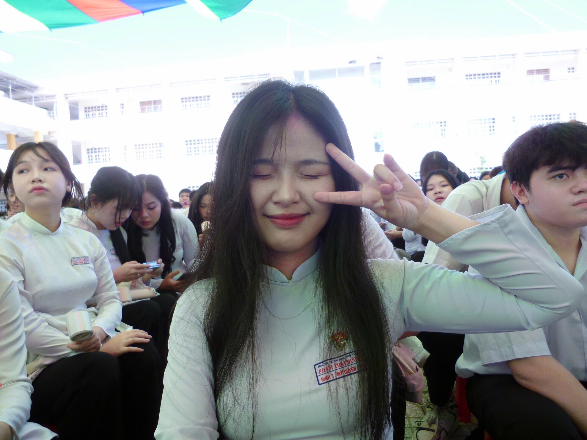

Sinh viên CNTT
Trường🏫: Đại học Trà Vinh
Lớp📚: DA25TTA
MSSV❤️: 110125141
Chào mọi người mình là Mỹ Quyên✌️
Hiện đang theo học ngành Công nghệ thông tin tại Đại học Trà Vinh.
Trong quá trình học tập, mình luôn chủ động tìm tòi, học hỏi thêm kiến thức mới và rèn luyện kỹ năng thực hành để nâng cao năng lực bản thân.
Bên cạnh đó mình cũng tích cực tham gia hoạt động CLB để mở rộng kỹ năng và có thêm trải nghiệm thực tế hihi
| Các hoạt động | |
|---|---|
| Làm việc nhóm📚 | Làm việc nhóm, hỗ trợ bạn bè trong học tập, tham gia các bài thực hành. |
| Về nguồn📍 | Tham gia trồng cây và dọn vệ sinh ở Đền thờ Bác bên cạnh đó còn tham gia các hoạt động an sinh xã hội |
| Tham gia các CLB👯 | Tham gia hoạt động của các câu lạc bộ ở trường để được trải nghiệm và nâng cao kỹ năng sống |
Nấu ăn 👩🍳 • Nghe nhạc🎶 • Đi du lịch🧳 • Xem phim 🍿